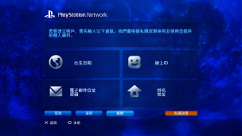

PlayStation™Network > 登入
登入
若要使用此機能，可能需先更新系統軟件。
PSNSM是提供使用者在 （PlayStation®Store）購物、或與
（PlayStation®Store）購物、或與 （好友）的聊天機能等的線上服務。若要使用PSNSM，需持有Sony Entertainment Network的帳戶。請進入
（好友）的聊天機能等的線上服務。若要使用PSNSM，需持有Sony Entertainment Network的帳戶。請進入 （PlayStation™Network），並選擇
（PlayStation™Network），並選擇 （登入），遵循畫面指示，建立帳戶。
（登入），遵循畫面指示，建立帳戶。

新建帳戶時需登錄的主要項目
| 個人情報 | 輸入登錄者的出生年月日／姓名／地址。 |
|---|---|
| 主帳戶／副帳戶 | 帳戶分為「Master Account(主帳戶）」和「Sub Account(副帳戶）」。 Master Account(主帳戶）： 標準帳戶，需一定年齡以上的登錄者始可建立。主帳戶可設定副帳戶之使用條件。 Sub Account(副帳戶)： 一定年齡以下的使用者使用的帳戶。需在主帳戶的監督下使用。副帳戶無法新建電子錢包。購買需付費商品或服務等時，僅能使用主帳戶的電子錢包支付。主帳戶尚未存在時，無法建立副帳戶。 主帳戶與副帳戶的使用條件因國家、區域而異。詳情請參閱各區域的官方網站。 |
| 登入ID（電子郵件位址） | 登錄要登入PSNSM時使用的ID。請登錄能接收（PlayStation®Store）傳送之通知郵件的電子郵件位址。 |
| 密碼 |
請輸入以下內容的密碼。
|
| 線上ID |
登錄要在PSNSM上公開的暱稱。一旦設定即無法變更。請遵循以下指示輸入線上ID。
|
提示
- 若要建立副帳戶，請參閱下列網站：
https://www.playstation.com/acct/family - 副帳戶可能因您子女的年齡而必須使用電腦建立。正確執行登錄作業後，通知郵件即會傳送至主帳戶的登入ID（電子郵件位址）。主帳戶的登錄者需遵循指示，使用電腦完成登錄。
- 要使用已建立的副帳戶登入PSNSM時，需先將副帳戶登錄為登入PS3™的使用者。詳細內容請參閱（PlayStation™Network）＞［延用既有帳戶］。
- 登入ID（電子郵件位址）與密碼永不公開。保管時請注意勿讓他人知悉。
- 一位登入PS3™的使用者僅能建立一個帳戶。若想建立複數的帳戶，請進入
 （使用者）並新建使用者。
（使用者）並新建使用者。 - 有關我們如何保管您登錄的個人資料，請參閱各區域的官方網站。
- 若要利用PSNSM，需先準備能與寬頻網路連線的環境或設備。本主機不支援撥號連線。
- PSNSM的提供區域和語言因地而異。詳細請參閱各區域的支援。
- （登入）僅會於尚未建立帳戶時顯示。